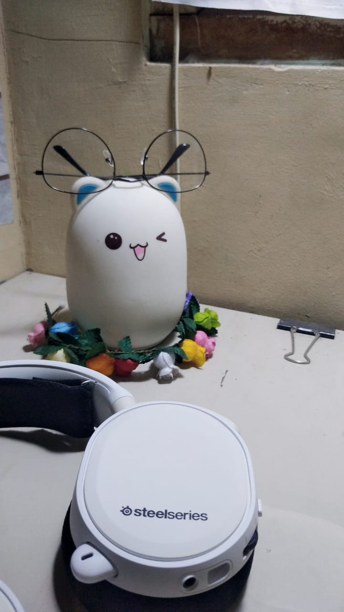
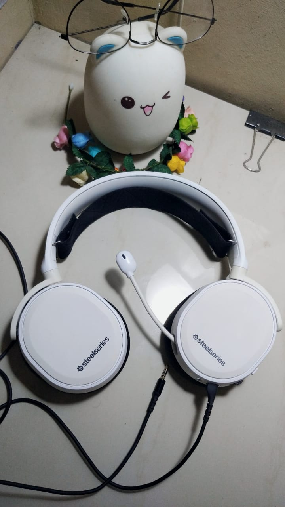

Haloo semua.. saya post ini mendadak bangett.. karena 30 menit lagi mau showcase project di channel youtube WPU. Karena bingung mau post apa yah.. jadi saya post review headset saya saja.. berhubung ini adalah headset pertama saya. Nah mari kita intip dulu nih fotonya..

Awalnya saya sering pusing kalau pakai earphone dan berhubung saya berjilbab jadi lebih sulit juga ketika memasukkan earphone ke telinga. Nah suatu saat ada teman saya yang nyeplos gini, “headset lebih simple kan kalau pakai jilbab” sejak itu saya tau apa yang harus saya tabung wkwk.. eh sebelum sempet terkumpul tabungan saya, ternyata saya menang lomba.. dan karena hadiahnya lumayan nih.. alhasil saya langsung cari-cari review headset dari sana-sini.. saya takut kalau headset yang saya beli mudah rusak, maka saya cari yang brandnya banyak yang review. Selain itu saya pingin headset warna putih dengan style minimalis ditambah microphone yang bagus dan jernih.. eitz jangan lupa harganya jangan mahal-mahall, ntar bokek :")
Setelah siang-malam ngelembur cari headset di e-commerce ijo-ijo. Akhirnya dapat nih yang sesuai, eh belum sesuai, karena harganya sekitar 1 jutaan.. sedihh dapat yang sesuai harganya ga ramah.. terus kepikiran nih.. kalau second pasti lebih murah, dan blablabla dapet deh yang second dan lebih murah.. YEAYY

Nah sebenernya udah mepet banget nih kalau mau lanjut review.. saya lanjut besok deh kalau ada waktu yaa